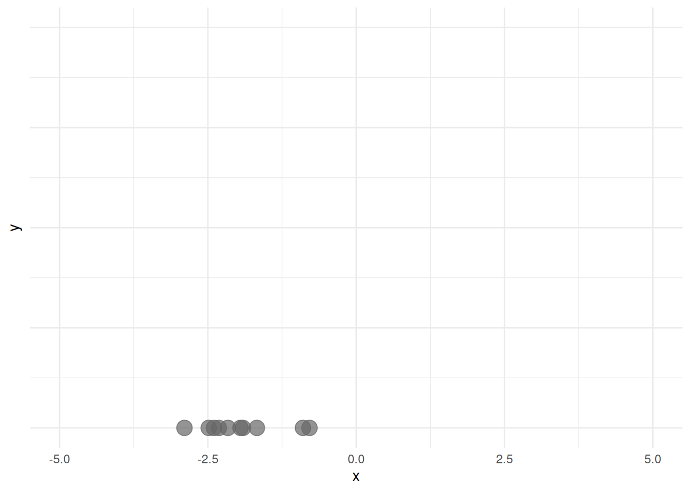
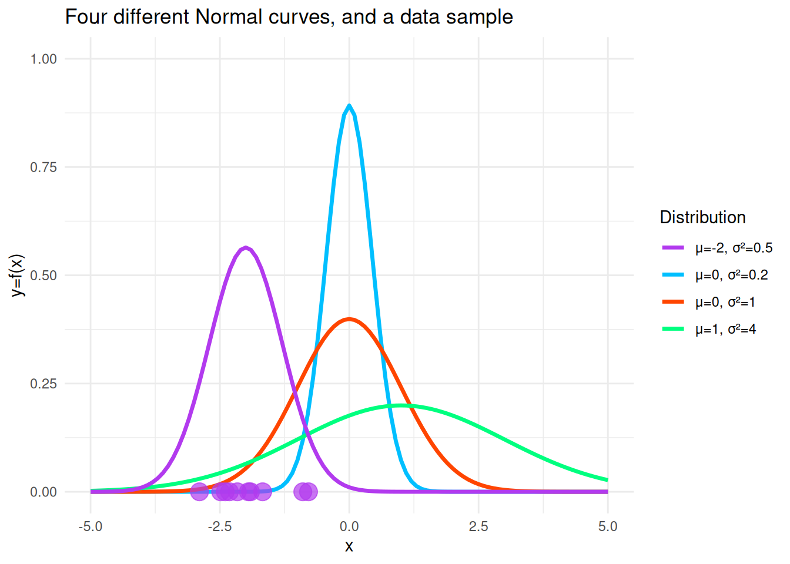

Maximum Likelihood Estimation
Introduction
As we discussed at the end of the last lecture, Maximum Likelihood Estimation is a rather general and very useful method for estimating parameters. The estimators found by this method (called MLEs) have useful statistical properties, which is why this method is widely used.
In maximum likelihood estimation, as the name suggests, we pick parameters that are most likely to have resulted in our observed sample. That is, we have an IID data sample, and a probability model (some particular family of probability distributions) in mind that we believe generated this data sample. We need to decide what probability model we would use based on other considerations, perhaps field knowledge or visualizations of the data, as we saw in the rainfall example earlier.
Then we have to estimate the parameter values for our probability model that maximize the likelihood that the model produced the observed sample. The following example is reproduced from Kerns (2017), using a different random sample.
Example In this example, we can see the basic idea behind maximum likelihood estimation. Say we have an observed data sample from some process.
We have strong reason to believe that the generating probability model is a Normal distribution, but we do not know the parameters. Let’s look at a picture with four possible distributions from a Normal family. When we superimpose the points, we see that the most likely distribution it could have come from is the purple one, so now the points are shaded purple instead of gray.

The idea is that we would do this quantitatively over all possible Normal distributions to find the particular parameters that maximize the probability of seeing these data points.
Estimating the parameter values
Suppose we have an IID sample \(X_1, \ldots, X_n\) that come from some known or assumed probability distribution, but with unknown parameter \(\theta\). Let \(X_i \sim f(\cdot \vert \theta)\), where \(f\) is the PMF (for discrete \(X\)) or PDF (for continuous \(X\)) of the distribution. Suppose we have the observed values of this sample: \(X_1 = x_1, \ldots, X_n = x_n\). We consider the joint density or probability of observing these values as a function of \(\theta\), that we call the likelihood of \(\theta\): \[ \mathrm{lik}(\theta) = f(x_1, x_2, \ldots, x_n \vert \theta) \] Note that given fixed sample values \((x_1, \ldots, x_n)\), \(\mathrm{lik}(\theta)\) is a function of \(\theta\). If our \(X_i\) are discrete, for example, then \(\mathrm{lik}(\theta)\) is the probability of observing these values. The maximum likelihood estimator of \(\theta\) is the value of \(\theta\) that maximizes the the likelihood - for discrete \(X_i\), it maximizes the probability of seeing the observed data.
Note
It is worth emphasizing that even though we write \(\mathrm{lik}(\theta) = \mathrm{lik}(\theta\vert x_1, x_2, \ldots, x_n)\) as equal to \(f(x_1, x_2, \ldots, x_n \vert \theta)\), we think about the first, \(\mathrm{lik}(\cdot)\), as a function of the variable \(\theta\) for fixed \(x_1, x_2, \ldots, x_n\), and the second \(f(\cdot)\), as a PDF (or PMF), which is a function of the \(x_i\) for some fixed parameter \(\theta\). We think about these functions differently, in the sense of what we think of as the variable, and what we think of as fixed.
Let’s see how we might solve for the maximizing \(\theta\) in a simple case.
The Bernoulli\((p)\) distribution
Suppose we have an IID sample \(X_1, \ldots, X_n\), where \(X_i \sim Bernoulli(p)\). Recall that the PMF of \(X_i\) is given by \[ p(x) = \begin{cases} \theta^x\,(1-\theta)^{1-x} \quad & x= 0,1\\ 0 \quad & \mathrm{ otherwise} \end{cases} \]
Note that \(x\) just takes two values \(0\) and \(1\), and \(\theta = p\), so \(0\le \theta\le 1\). The joint probability that \(X_1 = x_1, \ldots, X_n = x_n\) is given by \(P(X_1 = x_1, \ldots, X_n = x_n)\). We use the independence of the \(X_i\) to write: \[ \begin{align} P(X_1 = x_1, \ldots, X_n = x_n) &= P(X_1 = x_1)\times P(X_2 = x_2) \times \ldots\times P(X_n = x_n) \\ &= \theta^{x_1}\,(1-\theta)^{1-x_1}\times \theta^{x_2}\,(1-\theta)^{1-x_2}\times \ldots \theta^{x_n}\,(1-\theta)^{1-x_n}. \end{align} \] Collecting all the \(\theta\) terms and \(1-\theta\) terms we get: \[ \begin{align} \mathrm{lik}(\theta) &= f(x_1, x_2, \ldots, x_n \vert\theta) \\ &= P(X_1 = x_1, \ldots, X_n = x_n\vert\theta) \\ &= \theta^{x_1+x_2+\ldots +x_n}(1-\theta)^{1-x_1 +1-x_2 + \ldots + 1-x_n}\\ &= \theta^x (1-\theta)^{n-x},\\ \end{align} \] where \(\displaystyle x = \sum_{i=1}^n x_i.\)
If we maximize this quantity (with respect to \(\theta\)), then we are maximizing the probability of seeing this particular observed data sample. This seems kind of complicated to maximize, so we will take the (natural) log of the likelihood and maximize that instead. Since \(\log(x)\) is a monotonic function of \(x\), maximizing the logarithm of the likelihood will be equivalent to maximizing the likelihood itself.
Define \(\ell(\theta) = \log(\mathrm{lik}(\theta))\). Now we have: \[ \ell(\theta) = \log(\mathrm{lik}(\theta)) = x \log(\theta) + (n-x)\log(1-\theta). \]
Since we want to maximize \(\ell(\theta)\) with respect to \(\theta\), we differentiate it w.r.t \(\theta\): \[ \dfrac{d\ell(\theta)}{d\theta} = \frac{x}{\theta} - \frac{(n-x)}{1-\theta}. \] Setting this equal to 0 and solving for \(\theta\) gives us that the maximizing \(\theta\) is given by \(\dfrac{x}{n} = \dfrac{\sum_{i=1}^n x_i}{n} = \bar{x}\) (assuming that \(\theta\) is not \(0\) or \(1\)). You can check that this is indeed a maximum by doing the first or second derivative test.
The maximum likelihood estimate for \(\theta\) is given by \(\dfrac{\sum_{i=1}^n x_i}{n}\). The corresponding statistic \(\hat\theta\) is given by: \[ \hat\theta = \frac{1}{n}\sum_{i=1}^n X_i = \overline{X}. \] \(\hat\theta\) is called the maximum likelihood estimator of \(\theta\).
Example Suppose that we have an IID \(Bernoulli(\theta)\) sample, with \(n=5\) and our observed values are \(0, 0, 1, 0, 1\). Then \(\mathrm{\theta} = \theta^2 (1-\theta)^3\), and the maximum likelihood estimate for $is given by \(\hat\theta = \dfrac{2}{5}\).
Note that our goal is to maximize the likelihood function. We don’t have to take the log of \(\mathrm{lik}(\theta)\), but here it was the easiest way to maximize the likelihood function.
Definition of the MLE: We say that \(\hat{\theta} = \hat\theta(X_1, \ldots, X_n)\) is a maximum likelihood estimator if \(\mathrm{lik}(\hat\theta) = \mathrm{lik}(\hat\theta \vert X_1, \dots, X_n)\ge \mathrm{lik}(\theta \vert X_1, \dots, X_n)\) for all \(\theta\). That is, \(\mathrm{lik}(\hat\theta \vert X_1, \dots, X_n)\) achieves its maximum value at \(\hat{\theta}\).
Let’s consider some more examples.
The Poisson(\(\lambda\)) distribution
Recall that the PMF of a \(Poisson(\lambda)\) distribution is \(f(x) = P(X=x) = \dfrac{\lambda^x e^{-\lambda}}{x!}\), where \(x = 0, 1, 2, \ldots\).
If \(X_1 = x_1, \ldots, X_n=x_n\) are IID \(Poisson(\lambda)\), then the joint PMF is the product of the marginals. This gives us (we can leave it as a function of \(\lambda\)): \[ \mathrm{lik}(\lambda) = \dfrac{\lambda^{x_1} e^{-\lambda}}{x_1!}\cdot \dfrac{\lambda^{x_2} e^{-\lambda}}{x_2!}\dots \dfrac{\lambda^{x_n} e^{-\lambda}}{x_n!} = \dfrac{\lambda^x e^{-n\lambda}}{x_1!x_2!\ldots x_n!} \] Taking logs, we get that (again, writing \(x = \sum_{i=1}^n x_i)\) \[ \ell(\lambda) = x\log(\lambda) -n\lambda -log(x_1!x_2!\ldots x_n!). \] We can leave the last term as is since it does not contain \(\lambda\) and when we differentiate with respect to \(\lambda\), its derivative will be \(0\). This implies that: \[ \dfrac{d\ell(\lambda)}{d\lambda} = \dfrac{x}{\lambda} -n \Rightarrow \hat\lambda = \dfrac{x}{n} = \bar{x}. \]
Again, the maximum likelihood estimate is \(\hat\lambda = \bar{x}\), and the corresponding statistic is \(\hat\lambda = \bar{X}\).
Example Suppose \(n=3\) and our observed values are \(5, 2, 3\). Then the MLE is given by the average of these numbers, which is 3.33.
The Gamma(\(\alpha, \lambda\)) distribution
The PDF of this distribution is \(f(x\vert \alpha, \lambda) = \displaystyle \dfrac{\lambda^\alpha}{\Gamma(\alpha)}x^{\alpha - 1}e^{-\lambda x}\), for \(0\le x < \infty\).
Let’s write down the log-likelihood function of \(\theta = (\alpha, \lambda)\), using the sample \(X_1, \ldots, X_i\): \[ \ell(\alpha, \lambda) = \sum_{i=1}^n(\alpha - 1) \log X_i -\lambda\sum_{i=1}^nX_i + n\alpha\log \lambda- n\log \Gamma(\alpha) \] Now we have two variables, so we will need to take partial derivatives.
Check your partial derivatives!
First, let’s take the partial derivative with respect to \(\alpha\), so we will treat \(\lambda\) (and the \(X_i's\)) as constants: \[ \frac{\partial \ell(\alpha, \lambda)}{\partial \alpha} = \sum_{i=1}^n \log X_i + n\log \lambda - n \frac{\Gamma ' (\alpha)}{\Gamma(\alpha)}. \] Now, let’s find the partial derivative of \(\ell(\alpha, \lambda)\) with respect to \(\lambda\): \[ \frac{\partial \ell(\alpha, \lambda)}{\partial \lambda} = -\sum_{i=1}^n X_i + \frac{n \alpha}{\lambda} \]We can set the second partial derivative equal to 0, and we get (at the MLE’s \(\hat\lambda\) and \(\hat\alpha\)) that:
\[ \hat\lambda = \frac{\hat\alpha}{\overline{X}}. \]
We take this and plug it into the expression we get when we set the partial with respect to \(\alpha\) equal to 0. That is when we can see that we have a problem. We get: \[ n \log (\hat\alpha) - \sum_{i=1}^n \log X_i + n\log \frac{\hat \alpha}{\overline{X}} - n \frac{\Gamma ' (\hat \alpha)}{\Gamma(\hat \alpha)} = 0 \] which does not give us a closed form solution. We need to use a numerical, iterative procedure. We can use the method of moments estimates for the starting value for this procedure.
Exercise Compute the maximum likelihood estimators for parameters of the:
- Normal(\(\mu, \sigma^2\)),
- Exponential(\(\lambda\)), and
- Uniform(\(0, b\)) distributions.
Check your work
\[ \begin{align*} \ell(\lambda) &= \log\mathrm{lik}(\lambda)\\ &= \log\left(\lambda^n e^{-\lambda n \overline{X}}\right)\\ &= n \log \lambda - \lambda n \overline{X} \\ \Rightarrow \dfrac{dl}{d\lambda} &= \dfrac{n}{\lambda} - n \overline{X}\\ \Rightarrow \hat\lambda &= \dfrac{1}{\overline{X}} \end{align*} \]References
Chihara, Laura M., and Tim C. Hesterberg. 2018. Mathematical Statistics with Resampling and r. John Wiley & Sons, Hoboken, NJ.
Hogg, Robert V., Joseph W. McKean, and Allen T. Craig. 2005. Introduction to Mathematical Statistics. 6th ed. Upper Saddle River, NJ: Pearson Prentice Hall.
Kerns, Jonny. 2017. “Probability Concepts Explained: Maximum Likelihood Estimation.” Medium. 2017. https://medium.com/data-science/probability-concepts-explained-maximum-likelihood-estimation-c7b4342fdbb1.
Pimentel, Sam. 2024. “STAT 135 Lecture Slides.” Lecture slides (shared privately).
Rice, John A. 2006. Mathematical Statistics and Data Analysis. 3rd ed. Duxbury Press.